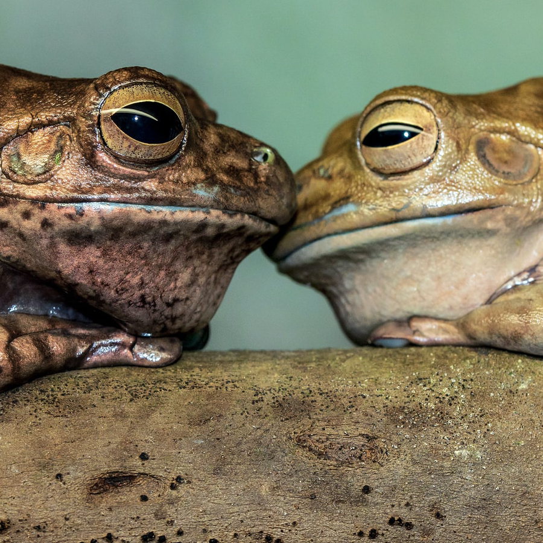
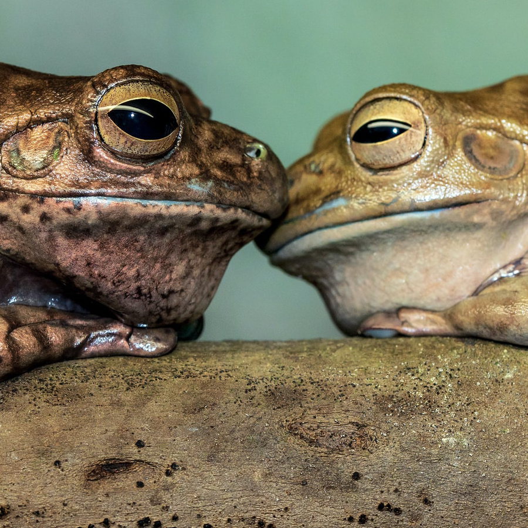

Bienvenido al Centro Holistico Nuestro Mundo
Un centro holístico es donde se practica el holismo o la medicina holística que proponen analizar todos los tipos de sistemas como un conjunto y no en el estudio individual de sus partes.
La Terapia Holística es un tipo de tratamiento que se ocupa de la salud del individuo en su totalidad. Mientras que un diagnóstico tradicional puede dividirse en partes separadas, la terapia holística ve a la persona en su totalidad (mente, cuerpo y espíritu) como una entidad singular.
El holismo considera que el "todo" es un sistema más complejo que una simple suma de sus elementos constituyentes o, en otras palabras, que su naturaleza como ente no es derivable de sus elementos constituyentes. El holismo defiende el sinergismo entre las partes y no la individualidad de cada una.

Desintoxicación
Limpieza profunda del cuerpo y el alma, para curar el panama, para dar fuerza y para curar otras enfermedades
Cuerpo y espiritu
El espíritu se diferencia del alma porque el espíritu es considerado universal, en contraste con el alma, que es individual. Según la teorización cristiana, el hombre se compone de tres elementos: el cuerpo, el alma y el espíritu.

Sanación del alma
El proceso de sanación comienza con la toma de conciencia Pero para comenzar a sanar, primero debemos de ser conscientes de nuestras heridas. Debemos mirar hacia dentro y contemplarnos y esto es algo que no acostumbramos a hacer.
Vuelve a nacer
Se trata de un alucinógeno estimulante con una estructura similar a la dimetiltriptamina (DMT). Provoca potentes cambios visuales y auditivos, alteraciones en la percepción del tiempo y alucinaciones sensitivas, pudiendo también producir ansiedad, pánico y trastornos psicóticos como la psicosis esquizofrénica.
Calendario de actividades Diciembre 2022
La vacuna Amazonica
Si tienes alguna enfermedad inmune, inflamatoria o quieres hacer una depuración profunda de tu cuerpo te puede interesar esto.
El uso del veneno de la rana Phyllomedusa Bicolor (PB) o Kambó es una práctica de medicina alternativa propia de culturas indígenas de la selva amazónica.
Desintoxicación del cuerpo
• Desbloquea emociones. • Desintoxica páncreas, hígado, riñones e intestinos. • Potencializa el sistema inmunológico. • Ayuda con los síntomas post COVID-19 • Alivia episodios de migraña. • Alivia transtornos en el sistema digestivo.
Temazcal
Un temazcal (del náhuatl temazcalli, ‘casa donde se suda’, de temaz, ‘sudor’, y calli, ‘casa’) hace referencia a un ritual ancestral prehispánica / preamericana y a su vez un baño de vapor de hierbas medicinales y aromáticas empleado en la medicina tradicional y la cotidianidad de los pueblos del centro de México.


 
